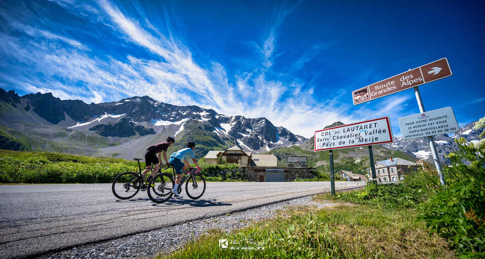
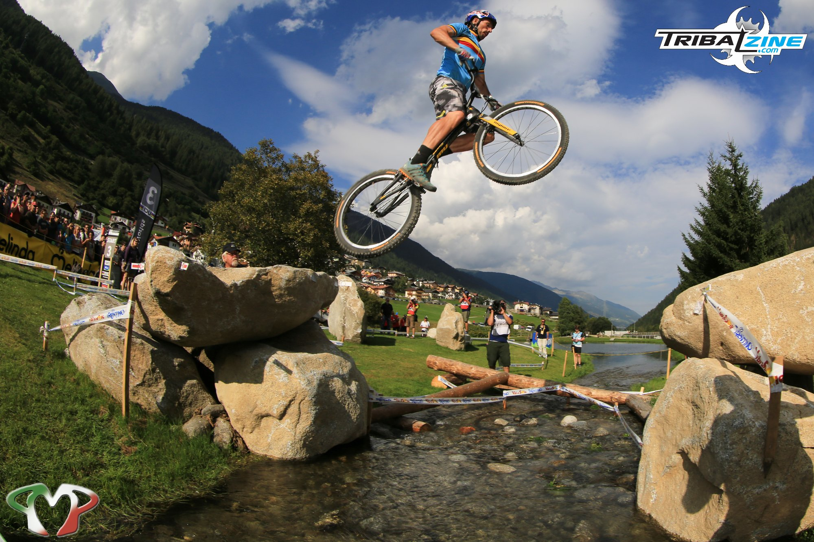
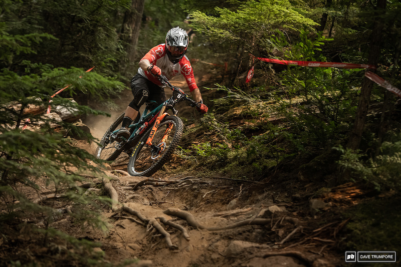

Le vélo de route est une très bonne façon de se déplacer sur de grande distance
tout en pratiquant du sport plus ou moins intense. Par exemple Le tour de France
représente bien cet univers du cyclisme : le but de faire la couses avec les autres
participants sur de nombreuses étapes à travers toute la France. L’usage du vélo de
route dans cette compétition mondiale est primordial, les vélos sont très légers, ont
un bon aérodynamisme et disposent de transmission très adaptée à la haute et basse vitesse.
Le trial est principalement axé sur le franchissement d’obstacle naturel ou artificiel.
Ces vélos ne disposent pas de selle et tout équipement non obligatoire dans la discipline
est retiré pour bénéficier d’un maximum de légèreté au moment de sauter sur un obstacle.
Le principe des courses son simple : il faut arriver d’un point A à un point B en un minimum
de temps en chutant le moins de fois possible. La pose d’un ou plusieurs pieds sont toléré mais
dans les championnat, la pose d’un pied entraînes des pénalités.

L’enduro est une discipline principalement axée sur la descente de pente plus ou moins
technique sur différentes surfaces : la terre, les cailloux et les racines. Cette façon
de faire du vélo est assez technique : les sentiers sont souvent étroits mais aussi assez
engagé, il faut souvent anticiper loin devant soit pour ne pas être surpris par un trou ou
des personnes qui sont en train de monter la pente, mais il faut aussi bien connaitre le
comportement de son vélo, car sans celle-ci une chute est vite arrivée.
